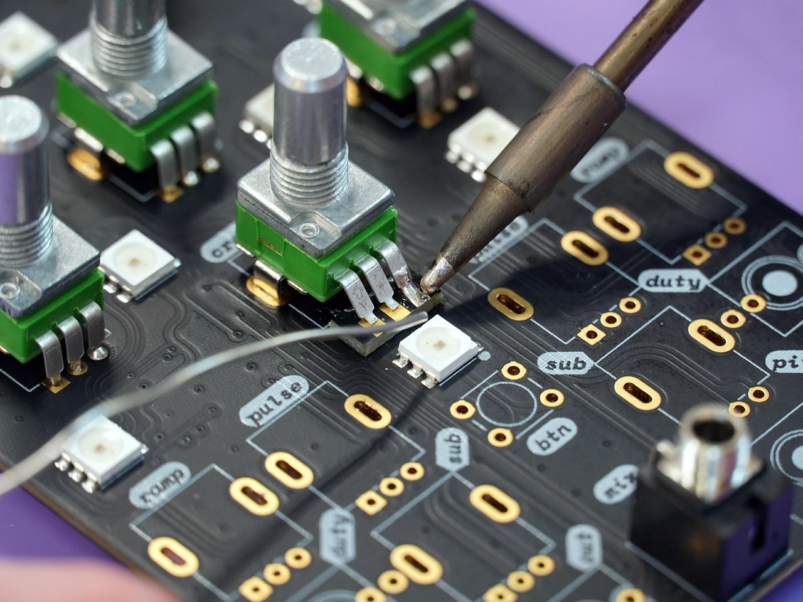

Cleaning electronics presents a unique challenge: you need a liquid capable of removing dust and smudges without damaging delicate optical coatings or causing electrical failure. Standard tap water is unsuitable because it contains dissolved minerals that leave behind streaks and, more importantly, can cause short circuits if they penetrate the device.
When ordinary water evaporates from a screen or circuit board, it leaves behind microscopic mineral crystals. On a display, these crystals create visible streaks and can even cause permanent micro-abrasions over time. Inside a device, mineral residues are often conductive or hygroscopic (attracting moisture), leading to corrosion and electrical shorts long after the cleaning is finished.
Modern displays—whether OLED, LCD, or specialized matte laptop screens—often feature delicate anti-reflective or oleophobic coatings. Harsh chemicals like ammonia or bleach can permanently strip these layers. Deionized water is the professional standard for safe, streak-free screen maintenance:
In electronics manufacturing and repair, deionized water is used to wash printed circuit boards (PCBs) after soldering. It effectively removes flux residues and ionic contaminants that could otherwise lead to "dendritic growth"—microscopic metallic whiskers that cause failure over time. For these applications, Type I ultrapure water is required to ensure zero residue remains.
To keep your hardware in peak condition, follow these purity-focused guidelines:
Yes, deionized water is one of the safest liquids for cleaning screens (TVs, laptops, smartphones) because it contains no minerals that can scratch the surface or leave streaks. However, it should always be applied to a cloth first, never sprayed directly on the device.
Tap water contains dissolved minerals and salts. If tap water gets inside an electronic device, these minerals can remain after the water evaporates, creating conductive paths that cause short circuits. DI water has these minerals removed, significantly reducing this risk.
Yes, high-purity (Type I) deionized water is frequently used in the manufacturing and repair of electronics to wash away flux residues and contaminants from PCB assemblies without leaving ionic residues.
Lightly dampen a clean microfiber cloth with deionized water. Gently wipe the screen in a circular or linear motion. Avoid using excessive water; the cloth should be damp, not dripping.
DI water is excellent for removing light dust and smudges. For heavy oily fingerprints, a 50/50 mix of deionized water and high-purity isopropyl alcohol is often recommended for better degreasing action.
Protect your high-value electronics with the highest level of purity. We recommend ASTM Type I ultrapure water for all sensitive electronic and screen cleaning applications.
Shop Type I Ultrapure Water →